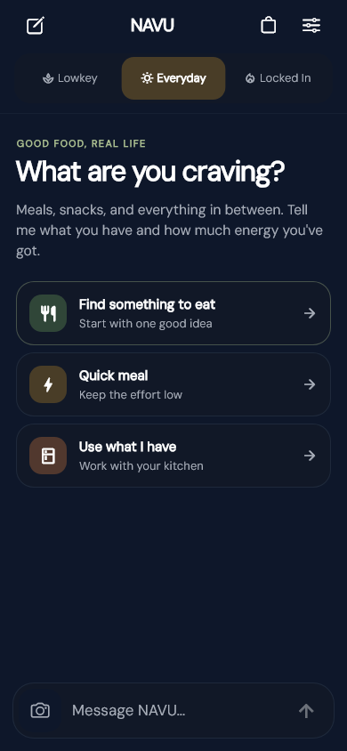

01 / Something with soul
Cajun gumbo
Chicken, sausage, and rice. Ask for the dish you actually want, then take it from ingredients to the stove.

Everyday life, one place
One conversation. A useful next step. NAVU is an everyday AI, starting with meals: tell it what you’re craving, what you have, or how much energy you’ve got. Work out the rest together.
Android release testing · Not yet a public store download

Not just “what could I cook?”
“What actually fits right now?”
Your cravings, made practical
A favorite dish. A quick bowl. Something worth taking your time over. Start with what sounds good, then make a plan around your kitchen.
01 / Something with soul
Chicken, sausage, and rice. Ask for the dish you actually want, then take it from ingredients to the stove.
02 / Keep it cozy
Broth, noodles, and your favorite toppings. Turn a craving into a meal you can make at home.

03 / Bring it to the table
Keep the recipe close. Follow the steps and use a timer when the cooking needs your attention.

Real meal and cooking captures from an earlier app design. Tap a screen to see it in full. Always check ingredients and allergens.
Meet your Energy Modes
Energy isn’t a personality type. It’s what you have to work with right now. Pick a mode—or just start talking.
“I don’t have much in me.”
Keep meals manageable. Less prep, fewer steps, and less to clean up.
“Just a normal kind of day.”
A familiar, satisfying meal that fits the time and ingredients you have.
“I’ve got energy. Let’s cook.”
Take your time. Try a technique or a more involved dish—because you want to.
A pace for right now
A familiar meal at your usual pace. Enough room to cook, without making it a project.
Try each mode to see its place in the updated app.
No mode is better than another. Your time, preferences, and constraints still matter.
Start with a conversation
Tell NAVU what you have, what sounds good, and how much you want to take on. No perfect plan required.
“I’m tired and hungry.Example prompt—not a live chat
I have eggs and toast.
Keep it simple.”
A dish you’re craving. What’s in the fridge. Twenty minutes before you need to leave. Start wherever you are.
NAVU helps narrow the decision around your ingredients, time, and preferred effort. Not another endless recipe scroll.
Check what you need, follow the cooking steps, or save the recipe for later. The choice stays yours.
A look inside NAVU
A calmer chat. Useful meal details. A kitchen that feels like yours. Explore fresh captures of the updated app in light and dark.
01 / 04 — Start anywhere
Breakfast, lunch, dinner, or something in between. Start with a craving, a few ingredients, or whatever energy you have.
Meal suggestions require your ingredient and allergy checks. Read about allergies and dietary needs. App previews use example data from the development build. They show the interface, not a live conversation or a public iPhone release.
Useful beyond the suggestion
Tell NAVU your ingredients. Keep what you have and what you need on a grocery list connected to your meal.
Save a meal, pick up ingredients, and reopen the same recipe when you’re ready to cook.
Name a dish or cuisine, from a Puerto Rican breakfast to gumbo or ramen. Be specific about what you want.
Saved meals stay on the device where you save them. Clearing app or browser storage removes them.
Allergies & dietary needs
NAVU can make mistakes and cannot guarantee that a meal meets your allergies or dietary needs.
Check every ingredient, product label, substitution, and possible allergen cross-contact before preparing or eating food. NAVU cannot verify how food is made or handled, and a recipe or dietary label does not certify that food is safe for you.
Add your allergies and ingredients to avoid in the app, and keep them up to date. These guide recipe suggestions; they do not replace your own checks. Review saved recipes again when your needs or ingredients change.
Dietary preferences are not medical advice. Follow your clinician’s guidance for food allergies and medically required diets. If you are unsure whether a food is safe for you, do not eat it until you have verified it.
Read FDA food-allergy guidanceA few things worth knowing
Food is where NAVU starts. The bigger idea is simple: help you figure out what realistically makes sense next.
The core experience is free and does not require an account. NAVU’s commitment is to keep that everyday usefulness accessible.
See the privacy policy for current information about the service and its business model.
No. You can pick Lowkey, Everyday, or Locked In, or just describe what you need. A mode is a starting point—not a label for who you are.
Meals, groceries, and cooking are the focus today. NAVU’s broader direction is practical, capacity-aware help across everyday life. Additional areas are future possibilities, not features we’re advertising as available now.
No. NAVU is a practical decision and action tool, starting with food. A natural conversation is the interface—not a promise of friendship, counseling, or medical care.
NAVU is not a therapist, clinician, or crisis service. If you need urgent support in the U.S. or its territories, call 988 or text 988. For immediate danger, call 911. Elsewhere, contact your local emergency or crisis service. More about 988.
Help shape what’s next
Curious how NAVU fits your day? Get in touch about Android release testing.
Ask about Android testingTesting access is arranged separately.
No public store download yet. iPhone is planned for a future release.
{kind=link}